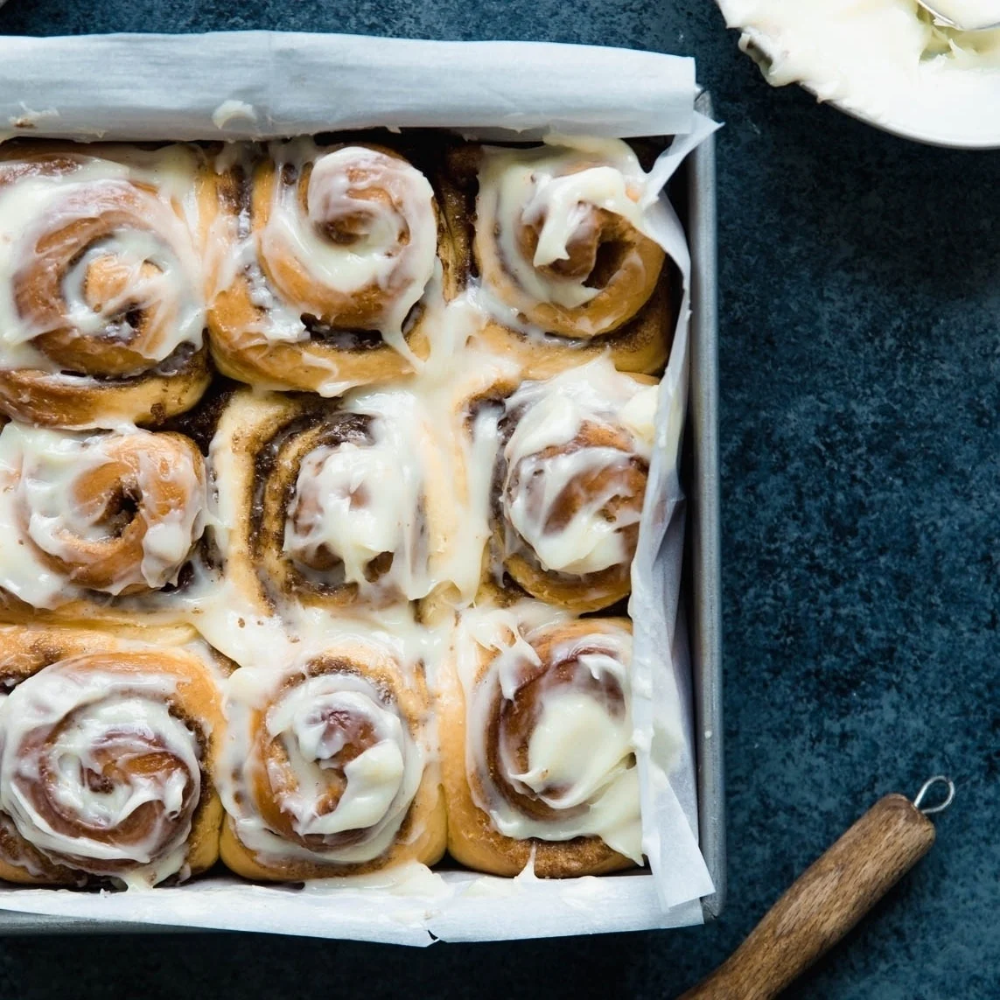

Cinnamon Rolls

Description
Sweet and fluffy rolls swirled with a buttery cinnamon-sugar filling and topped with a smooth and creamy glaze. These indulgent pastries are perfect for breakfast, brunch, or an afternoon snack with a cup of coffee.
Ingredients
Dough:
- 1 cup warm milk
- 2 1/4 tsp active dry yeast
- 1/2 cup granulated sugar
- 1/3 cup butter, melted
- 2 eggs
- 4 cups all-purpose flour
- 1 tsp salt
Filling:
- 1/2 cup butter, softened
- 1 cup brown sugar
- 2 tbsp ground cinnamon
Glaze:
- 2 cups powdered sugar
- 1/4 cup butter, melted
- 1 tsp vanilla extract
- 2-4 tbsp milk
Steps
- In a large bowl, combine warm milk and active dry yeast. Let sit for 5 minutes until frothy.
- Add granulated sugar, melted butter, eggs, flour, and salt. Mix until a dough forms.
- Knead the dough on a floured surface for about 5-7 minutes, until smooth and elastic.
- Place the dough in a greased bowl, cover, and let rise for 1 hour, or until doubled in size.
- Preheat the oven to 350°F (175°C).
- Roll out the dough on a floured surface into a large rectangle.
- Spread softened butter over the dough.
- Mix brown sugar and ground cinnamon, and sprinkle evenly over the butter.
- Roll up the dough tightly and cut into 12-15 slices.
- Place the slices in a greased baking dish.
- Cover and let rise for another 30 minutes.
- Bake for 25-30 minutes, or until golden brown.
- Mix powdered sugar, melted butter, vanilla extract, and milk to make the glaze.
- Drizzle the glaze over the warm cinnamon rolls before serving.